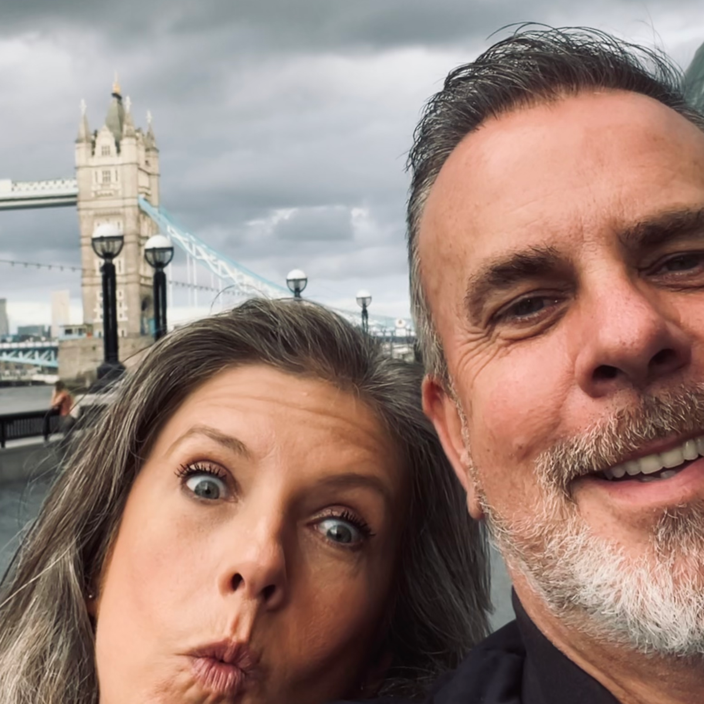
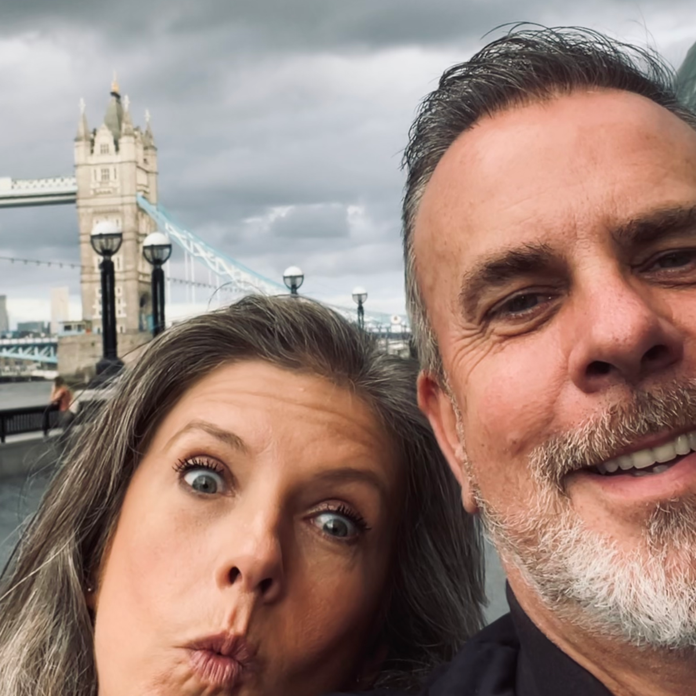

Early Life: Grew up in the East End of London, experiencing the vibrant culture and diverse community of the area. Moved to Essex in the early 1990s, a change that provided new opportunities and experiences.
A passionate traveler with a love for exploring diverse cultures and breathtaking destinations. From the romantic canals of Venice to the vibrant beaches of the Caribbean, and the bustling streets of London, My wife of 15 years and I have wandered far and wide and look forward to many more adventures.
Education:
- I developed an early interest in information technology and computer science.
- I studied computer programming at Colchester Institute in 1994, gaining foundational knowledge and skills in the field. Unfortunatly, life took an unexpected turn, and i had to pause my studies to take on employment
Career:
- Leveraged expertise from life to start a multi-million-pound company, serving as its director for many years. This venture marked significant success and leadership in the bar design and fabrication industry.
 
